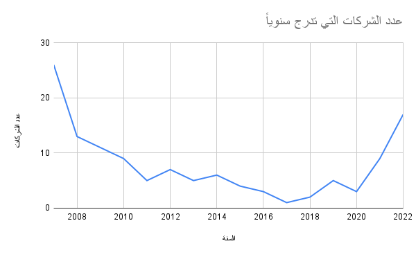
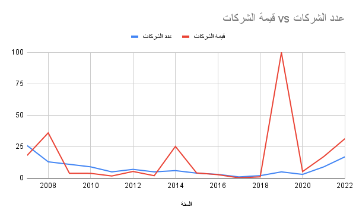

الاقتصاد السعودي يشهد نمو كبير جدا، في الاونة الاخيرة شهدت المملكة تغيرات اقتصادية كبيرة، ستعجل من العاصمة الرياض احد اكبر المراكز الاقتصادية في العالم اذا لم تكن الاكبر، رؤية المملكة 2030 تستهدف بناء اقتصاد مستدام قائم على عدة مصادر دخل متعددة، غير قائم على النفط فقط.
تغير نظرة اسواق المال السعودية عن الشركات المدرجة، فاصبح هناك تنوع كبير من الشركات التي تدرج في السوق بشكل دوري، فهناك ١٢٦ شركة ادرجت منذ بداية السوق في عام ٢٠٠٧، لناخذ نظرة على الرسم البياني 1.1
هنالك ١٧ شركة ادرجت خلال ٢٠٢٢ فقط، بقيمة اجمالية ٢٥٧ مليار ريال، هذه الشركات تساهم في نمو الاقتصاد المحلي، من ناحية قيمة سوقية وايضا قيمة اجتماعية فهذه الشركات تضيف قيمة مجتمعية، من ناحية اضافة وظائف جديدة، فتح اسواق جديدة، تنوع الانشطة التجارية
